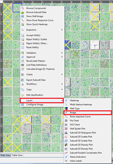
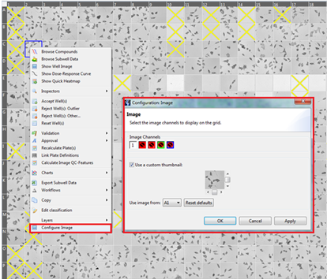
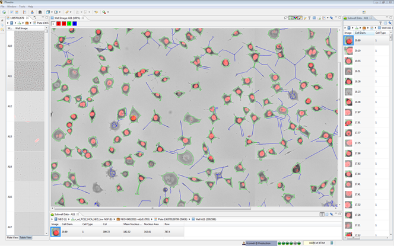

Images can be shown in many different places throughout Phaedra, like the Heatmap as overlays or as tooltips in Charts.
To add images to a Heatmap, right-click on a well, select "Layers" and click on the Image Layer.

Once the Image Layer is visible, you will see an extra menu after right-clicking on a well. Here you can configure the images by a pop-up window. You can select the image channels and select the image position.

Note: To get a better view of the images, we recommend that you turn off some other layers like the Heatmap layer.
To view images in charts, add an image layer. Only the selected points will show an image. (for an optimized view of the images, some points will be skipped)

Here is an example of a perspective with several views open to work with the images:
